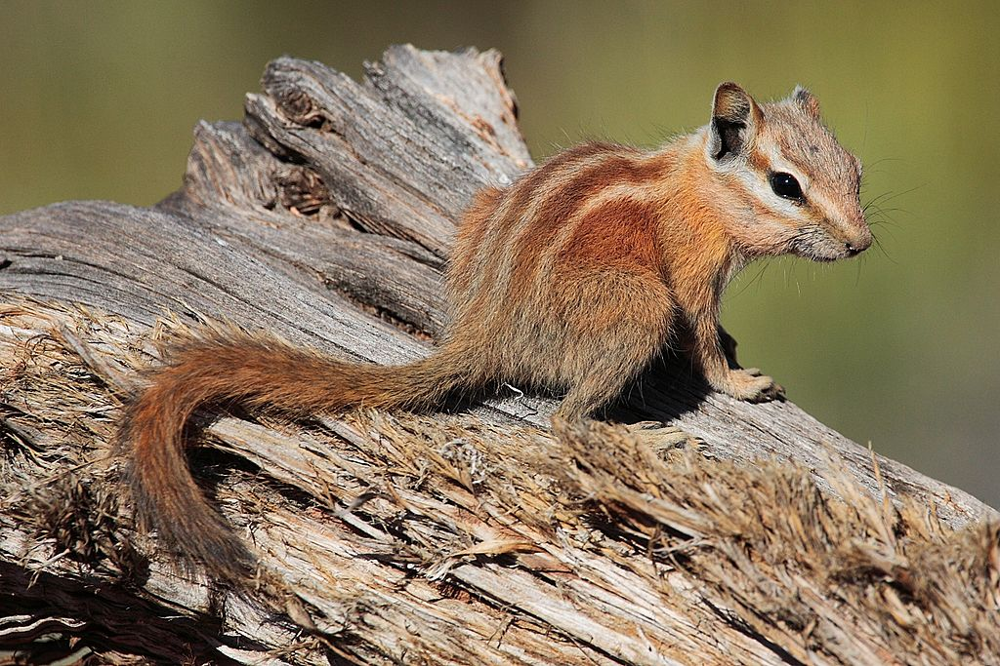
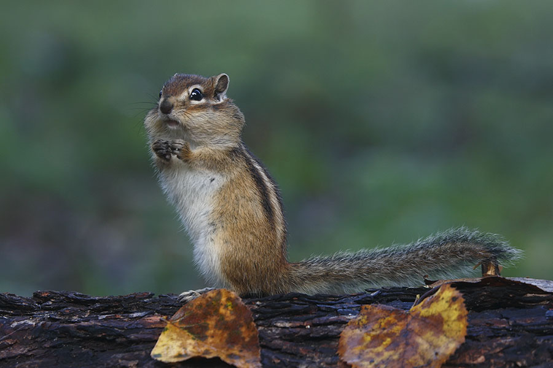
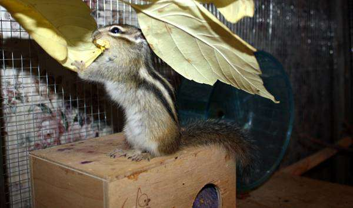
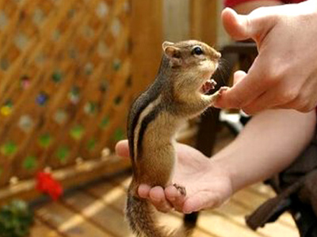

Интересная информация о бурундуках
Жилище бурундука
Бурундук, как и белка, — древесный житель. Ему не обязательно нужны высокие старые деревья, иногда он довольствуется зарослями черемухи, березняка или ивы. На открытых местах и в чистом высокоствольном лесу без подлеска из молодой поросли и кустарников он не живёт. Предпочитает места, заваленные буреломом и валежником по берегам речек и ручьёв.
В норе, которая бывает иногда довольно длинной — до 3-х метров, кроме камеры для гнезда, всегда имеются 1 или 2 большие кладовые для запасов и 1-2 тупичка — туалеты. Жилая зона выстилается сухой травой и листьями. В ней животные спят ночью и проводят время зимней спячки. Здесь же рождаются и детёныши.
Детёныши
Ведут одиночный образ жизни и охраняют свою территорию и нору от вторжения сородичей. Только для спаривания самцы и самки в определённое время года ищут контакта друг с другом. Первые детёныши рождаются в мае; второй помёт появляется на свет обычно в августе. После беременности продолжительностью тридцать дней на свет появляются четыре или пять детёнышей. Детёныши довольно долго живут в гнезде и начинают выходить наружу только уже подросшими. Уже на первом году жизни они становятся половозрелыми. В то время как бурундуки в дикой природе, как правило, не выживают более трёх лет, в неволе они могут достигать возраста десяти лет.
Бурундуки в неволе
Не так уж редко люди выбирают бурундука в качестве питомца. Преимуществом содержания этих животных в неволе является отсутствие резкого запаха, присущего белкам. Содержать бурундуков рекомендуется в одиночестве, так как присутствие большего количества зверьков в клетке приводит к соперничеству между ними, иногда со смертельным исходом. Бурундуки, выросшие в неволе или отловленные в молодом возрасте, легко приручаются.
Питание бурундуков должно быть разнообразным, содержать несколько разновидностей орехов, ягод, в том числе и сушёных. Большое значение для здорового содержания бурундуков имеют размеры клетки. Чем больше клетка, тем более спокойно поведение зверьков. Дно клетки должно быть выстлано специальным субстратом для грызунов (то есть древесная кора, опилки). Как и все остальные грызуны, бурундуки в неволе нуждаются в поддержании физической формы, при помощи бегового колеса.

С приходом осени, бурундуки, как и на природе, так и в неволе готовятся к зимней спячке, занимаясь подготовлением гнезда и зимних запасов. С приближением зимы, зверьки становятся более сонливыми, их активность значительно и постепенно уменьшается, пока они окончательно не впадут в спячку, которая может длиться от ноября до марта. В течение спячки, зверьки изредка просыпаются и подпитываются теми продуктами, которыми они запаслись за время подготовки к спячке.
Источник